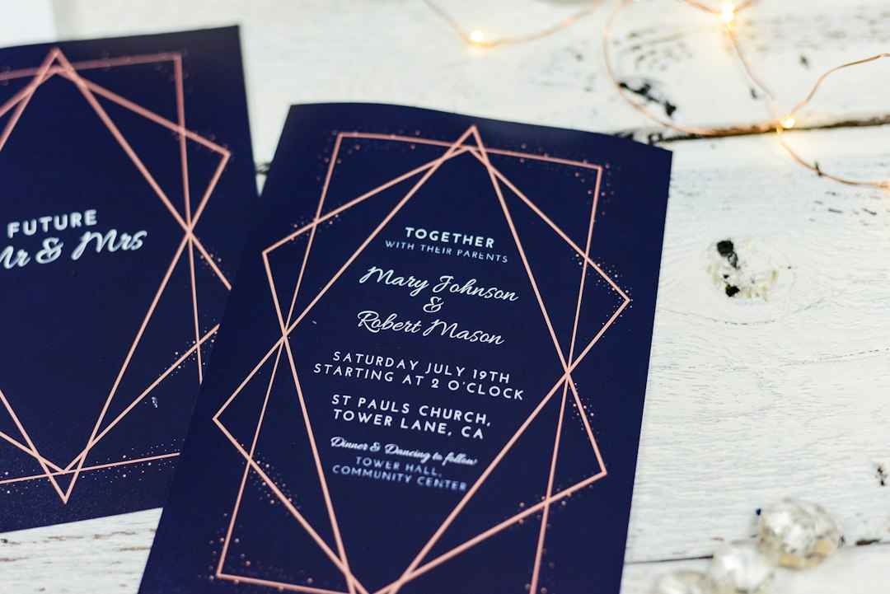

Come Ridurre Sprechi di Tempo e Costi con LOVE Partecipazioni Digitali per Wedding Planner e Agenzie Eventi

Riduzione drastica di tempi e costi nelle partecipazioni e gestione eventi con LOVE Partecipazioni Digitali
- Le partecipazioni cartacee provocano sprechi elevati in costi e tempi gestionali.
- Gestire intolleranze alimentari manualmente crea caos e rischi operativi per catering e organizzatori.
- LOVE Partecipazioni Digitali integra strumenti 3D, AI e RSVP intelligenti per semplificare l’intero flusso, abbattendo costi e migliorando l’efficienza.
Analisi approfondita della notizia e delle implicazioni operative
La recente segnalazione di Noemi Wedding Planner su Matrimonio.com porta all’attenzione del settore alcune criticità operative comuni a Wedding Planner, agenzie eventi e sposi riguardo la gestione delle partecipazioni e delle informazioni relative agli ospiti. L’utilizzo quasi esclusivo di partecipazioni cartacee comporta costi rilevanti di stampa, spedizione e distribuzione, oltre a tempi lunghi che incidono negativamente sulla tempistica complessiva dell’organizzazione dell’evento.
Un’altra problematica significativa riguarda la raccolta, il monitoraggio e la gestione delle intolleranze alimentari e preferenze gastronomiche degli invitati, un valore fondamentale per garantire esperienze su misura e senza inconvenienti. Ma senza strumenti digitali dedicati, quest’attività si traduce in continue riletture manuali, il rischio di errori e comunicazioni poco chiare tra planner, catering e sposi.
Questa situazione aumenta i carichi operativi dello staff, generando inefficienze che sottraggono tempo prezioso, aumentano i costi e possono compromettere la qualità del servizio offerto. Nel contesto competitivo del settore wedding ed eventi di lusso, diventa pertanto imprescindibile l’adozione di soluzioni tecnologiche progettate su misura, capaci di ottimizzare sia processi che risorse.
Le conseguenze e i costi di non agire
Ignorare queste inefficienze significa sostenere costi diretti e indiretti che impattano notevolmente sui margini di guadagno degli operatori. Le partecipazioni cartacee non sono solo un elemento estetico, ma rappresentano una spesa significativa: carta pregiata, stampa di qualità, confezionamento e spedizione postale o a mano. A questi si aggiungono i ritardi nelle conferme di partecipazione (RSVP), dovuti a scambio di e-mail o telefonate multiple.
Inoltre, la gestione manuale delle intolleranze alimentari espone a errori che possono avere conseguenze gravi durante l’evento - dall’insorgenza di allergie alle insoddisfazioni degli ospiti, con impatto reputazionale negativo per professionisti e agenzie. Il disordine informativo aumenta il carico mentale e operativo degli organizzatori, che spesso devono destreggiarsi tra fogli Excel non aggiornati, messaggi sparsi e briefing incoerenti con i catering.
Questi fattori combinati producono ritardi nelle decisioni, maggiori sprechi di risorse e una comunicazione frammentata tra team, riducendo la capacità di offrire un’esperienza cliente a 360°, fluida e impeccabile. Nel settore wedding, dove precisione e cura nei dettagli sono imperativi, non intervenire significa scivolare verso inefficienze difficilmente recuperabili.
Come LOVE Partecipazioni Digitali risolve il problema
LOVE Partecipazioni Digitali di RM Studio si presenta come l’innovazione tecnologica necessaria per trasformare questi nodi operativi in vantaggi competitivi. La piattaforma offre partecipazioni digitali d’autore con apertura 3D, capaci di emozionare e coinvolgere fin dal primo click riducendo drasticamente i costi di stampa e spedizione.
Il Monogram Studio AI integrato consente di personalizzare facilmente ogni partecipazione con elementi grafici raffinati, combinando gusto estetico e qualità professionale senza necessità di ricorrere a designer esterni, risparmiando tempo e money budget nel processo creativo.
La gestione degli RSVP è centralizzata e semplificata: ogni ospite può confermare la propria partecipazione, indicare eventuali intolleranze e preferenze alimentari direttamente nel sistema. Questi dati vengono automaticamente raccolti e sincronizzati, con la funzione export Excel dedicata che genera report strutturati per lo chef e il catering, assicurando zero errori e totale puntualità delle informazioni.
Infine, la spedizione delle partecipazioni e delle comunicazioni di aggiornamento avviene tramite WhatsApp con un pratico sistema 1-Tap, aumentando la rapidità del processo e la certezza di ricezione da parte degli invitati, secondo le modalità più utilizzate e privilegiate oggi.
Questa combinazione di funzionalità rivoluziona il modo in cui professionisti e coppie gestiscono l’organizzazione, traducendo direttamente in risparmio di tempo, riduzione dei costi e migliore customer experience.
| Gestione Tradizionale | Con LOVE Partecipazioni Digitali |
|---|---|
| Costi elevati per stampa e spedizione cartacea. | Partecipazioni digitali 3D ad alto impatto visivo spendendo meno. |
| Gestione manuale degli RSVP con perdite di tempo e rischi di errori. | RSVP digitali integrati con export Excel per chef e catering. |
| Comunicazione dispersiva e poco efficiente con gli invitati. | Spedizione WhatsApp 1-Tap per conferme e aggiornamenti veloci. |
| Dipendenza da designer esterni per personalizzazioni. | Monogram Studio AI integrato per partecipazioni personalizzate in-house. |
| Rischio di incomprensioni e problemi organizzativi con catering per le intolleranze. | Gestione integrata e precisa delle intolleranze, riducendo errori e rischi. |
💡 Ti è stato utile questo approfondimento?
Condividilo con un collega o un amico del settore Wedding Planner, Agenzie Eventi e Sposi a cui potrebbe interessare!
FAQ - Domande frequenti
1. Quanto tempo si risparmia passando da partecipazioni cartacee a LOVE Partecipazioni Digitali?
La digitalizzazione elimina tempi di stampa, spedizione e raccolta manuale RSVP, consentendo una riduzione media dei tempi gestionali del 40-60%, a seconda della dimensione dell’evento.
2. È possibile integrare le partecipazioni digitali con i gestionali esistenti dell’agenzia?
Sì, LOVE Partecipazioni Digitali offre funzionalità di esportazione dati in vari formati (Excel incluso) per un’integrazione semplice e veloce con software di terze parti dedicati alla pianificazione eventi.
3. Come viene gestita la personalizzazione grafica senza competenze tecniche?
Il Monogram Studio AI integrato facilita la creazione di partecipazioni d’autore senza necessità di designer esterni, con modelli personalizzabili che assicurano risultati professionali in poco tempo.
Inizia Subito
Licenza Sposi da €149 o Pannello Agency Hub B2B a €490 per 10 matrimoni.
Fonti Ufficiali e Risorse Esterne
Scopri l'Intelligenza Artificiale per la tua attività
Ottimizza i processi e aumenta le vendite con le soluzioni B2B di RM Studio.
Scopri LOVE Partecipazioni Digitali